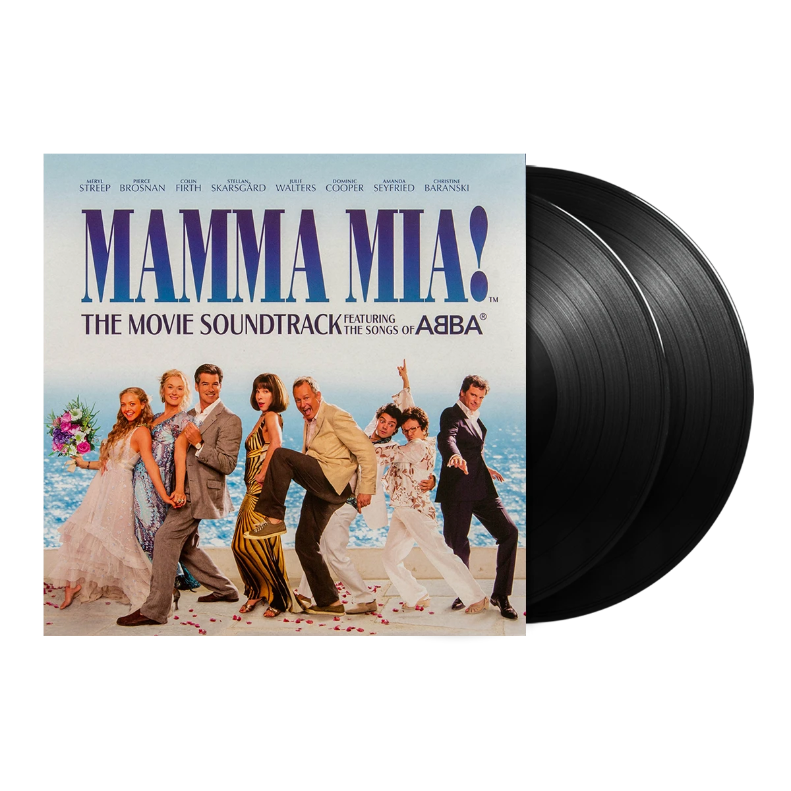

A soundtrack album was released on July 7, 2008 by Decca and Polydor in the United States and internationally, respectively. The recording was produced by Benny Andersson. The album features sixteen musical numbers within the film, including a hidden track. The album was nominated at the 51st Annual Grammy Awards for Best Compilation Soundtrack Album for Motion Picture, Television or Other Visual Media. The deluxe edition of the soundtrack album was released on November 25, 2008.
- "Honey, Honey" – Sophie, Ali and Lisa
- "Money, Money, Money" – Donna, Tanya and Rosie
- "Mamma Mia" – Donna
- "Chiquitita" – Rosie, Tanya and Donna
- "Dancing Queen" – Tanya, Rosie and Donna
- "Our Last Summer" – Harry, Bill, Sam, Sophie and Donna
- "Lay All Your Love on Me" – Sky and Sophie
- "Super Trouper" – Donna, Tanya and Rosie
- "Gimme! Gimme! Gimme! (A Man After Midnight)" – Sophie, Ali and Lisa
- "The Name of the Game" – Sophie
- "Voulez-Vous" – Donna, Sam, Tanya, Rosie, Harry, Bill, Sky, Ali, Lisa and Pepper
- "SOS" – Sam and Donna
- "Does Your Mother Know" – Tanya and Pepper
- "Slipping Through My Fingers" – Donna and Sophie
- "The Winner Takes It All" – Donna
- "I Do, I Do, I Do, I Do, I Do" – Sam and Donna
- "When All Is Said and Done" – Sam and Donna
- "Take a Chance on Me" – Rosie, Bill, Tanya, Pepper and Harry
- "I Have a Dream" – Sophie
- "Waterloo" – Donna, Rosie, Tanya, Sam, Bill, Harry, Sky and Sophie
- "Thank You for the Music" – Sophie